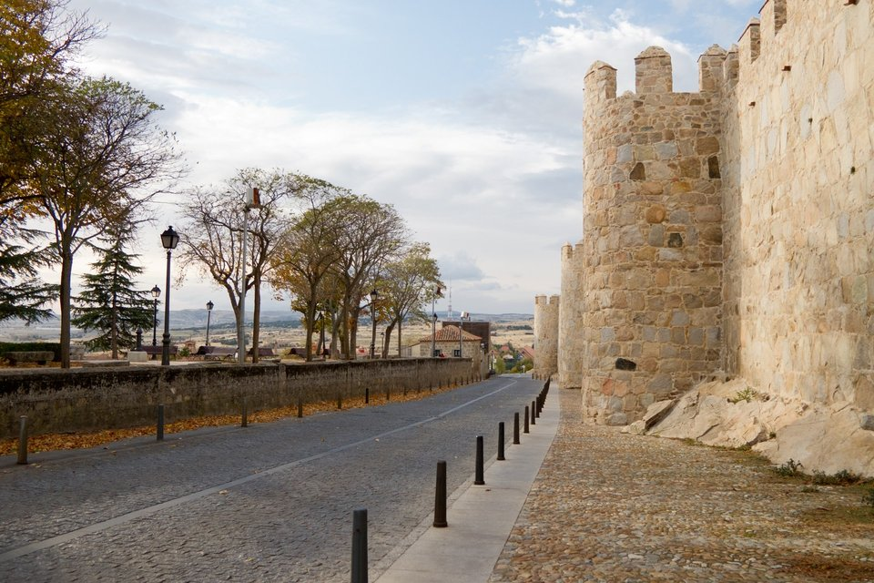

Spain · Ávila
Walls of Ávila audio guide
6 stops · 8 min · offline · plays as you arrive
The guide price is €2.99. This button is a placeholder. It does not open checkout and does not take payment. Email hello@getearwise.com.
Walk the best-preserved eleventh-century city walls in Europe, bristling with eighty-seven cylindrical stone towers high on the Castilian plateau. Six stops move from the classic valley viewpoint along the battlements to the birthplace convent of Saint Teresa of Ávila.
Stops
- 1
Cuatro Postes
Take in the full sweep of Ávila's granite ramparts from the four-column roadside shrine across the river.
- 2
Puerta del Alcázar
Stand before the twin-towered Puerta del Alcázar, monumental eastern gate into the walled town.
- 3
The Cathedral Apse
Inspect the fortified granite drum of Ávila's cathedral apse built directly into the city wall.
- 4
The Wall Walk
Walk along the crenellated parapet high above tiled roofs and storks' nests.
- 5
Convent of Santa Teresa
Visit the Baroque convent erected over the family home where Teresa of Ávila was born in 1515.
- 6
Basilica of San Vicente
End outside the walls at the golden-sandstone Romanesque basilica guarding the tombs of local martyrs.
On the map
All 6 stop pins for this guide are marked. Open map